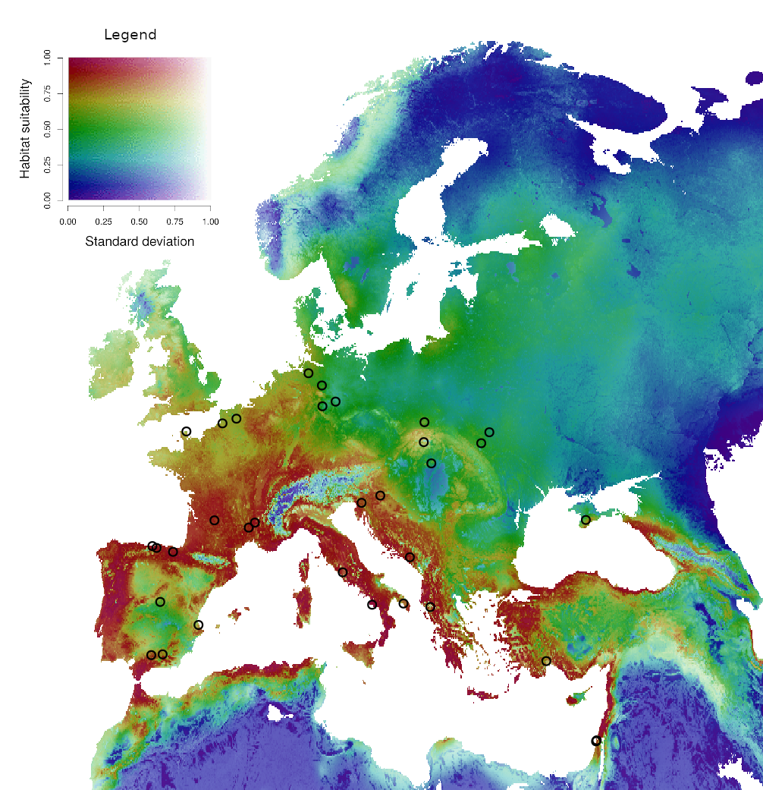
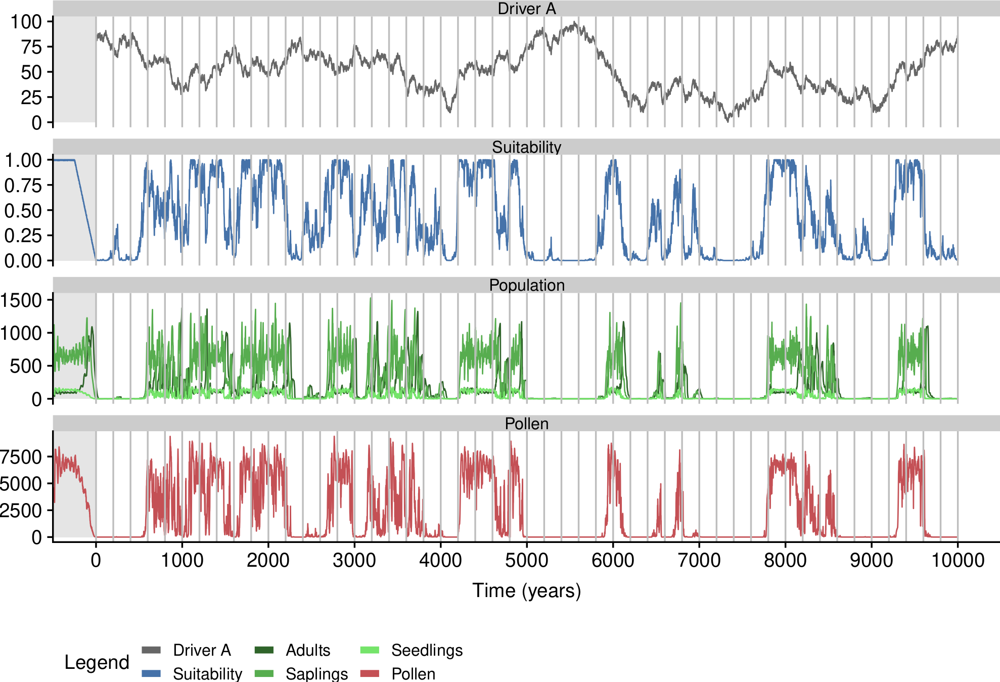
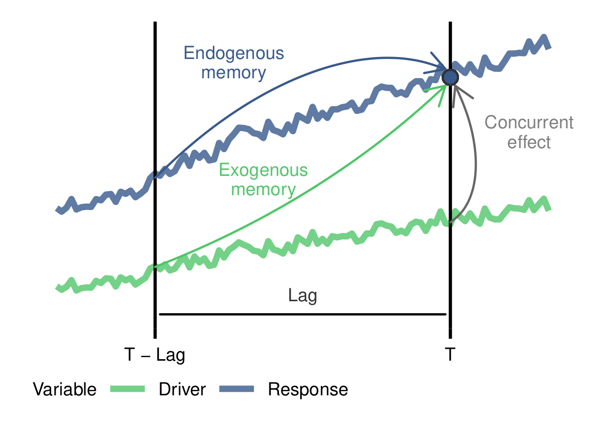

Bio
I am biogeographer and ecological modeler with a PhD in Plant Ecology and Global Change, a Master in Geographical Information Systems, a Degree in Biology, and quite a bit of experience in applying state-of-the-art quantitative methods to better understand the processes shaping the distribution of biodiversity across space and time.
I have developed my research career as PhD student at the Department of Botany of the University of Granada (2006 - 2009), staff researcher at IISTA, postdoctoral researcher at ECOINFO (2014 - 2017, Aarhus University, Denmark), led by Jens-Christian Svenning, postdoctoral researcher at EECRG (2017 - 2019), and currently as senior researcher at Maestre Lab, led by Fernando T. Maestre.
My research activity is structured around five main lines, namely biogeography, testing and development of quantitative methods, palaeoecology, range shift, and biodiversity conservation.
Biogeography
Why are species where they are? is a question I have been passionate about since I was a child.
A keystone result of my personal interest in this topic is the multidisciplinary study I led on the distribution of Neanderthals during the Last Interglacial ( Benito et al. 2016. This paper was highlighted at the Editor’s Picks section of Science ( Sugen 2017), and was among the top 20 most downloaded papers of the Journal of Bigeography during 2018. In Kellberg-Nielsen et al. (2017), led by my brilliant colleague Trine Kellberg-Nielsen we further discuss the dispersal dynamics of Neanderthals in their northern edge.

I have also learned a a fair deal about the biogeography of plant phenological strategies through my collaboration with the outstanding Constantin Zohner. In Zohner et al. (2016) we found that plant species from lower latitudes use spring photoperiod to trigger leaf-out, while boreal species do not use photoperiod as leaf-out signal. In a complementary study ( Zohner et al. (2017)) we found that plant species from regions with high spring temperature variability have higher winter chilling requirements than species living in more predictable environments. More recently, in Zohner et al. (2020), we report increasing risks of late spring frosts in significant portions of European and Asian forests.
Last, but not least in this section are my collaborations with the excellent biogeographer Gang Feng on the links between climatic and anthropogenetic legacies and plant distributions. In Feng et al. (2017) we found that tree assemblages with large phylogenetic age differences among species mostly inhabit areas with relatively high long‐term climate stability. The same year, in Feng et al. (2017) we evaluated the relationship between the distribution of threatened species and land-use change legacies, to find that the current distribution of threatened plants in China happens in places where historical land-use intensity was low, but has increased in the last decades.
Testing and development of quantitative methods
Understanding how quantitative methods work, developing new ones, and finding their limits of application are key axes of my research.
However, this line of research started by designing and creating an infrastructure to document, store and execute the ecological models named ModeleR. This system, used to run the ecological models required by the Global Change Observatory of Sierra Nevada, is described in Perez, Benito and Bonet (2012) and Bonet et al (2014).
In 2013 I compared the ability of stacked species distribution models based on different statistical and machine learning methods to predict tree species richness and composition in Mesoamerica (Benito et al. 2013), and contributed to a comparison of SDMs to forecast the distribution of the seaweed Zostera marina in the Wadden Sea (Tovar et al. 2013).
Recently I engaged in a collaboration with modelers and epidemiologists to warn against the use of species distribution models to forecast the expansion of SARS-CoV-2. In Carlson et al. (2020) we discuss the limitations of SDMs to model the direct transmission of the virus, and in Carlson et al. (2020) we point out that speculation on the relationships between the distribution of the virus and climate hinder decision making and preparedness. In the preprint Chipperfield et al. (2020) and in Contina et al. (2020, in press) we criticize two different misapplications of SDMs to the expansion of the virus.
R packages
After 10 years working with R I recently started to develop R packages. For example, the package distantia (Benito et al. 2020) implements several methods to quantify the dissimilarity among irregular multivariate time series.
The package memoria implements a method based on Random Forest to evaluate ecological memory (effect of antecedent conditions on a response variable) in time series data.
I also designed a mechanistical simulation to produce virtual pollen curves in the package virtualPollen. The model uses a set of drivers, the ecological niches of a virtual species for these drivers, the traits life-span and fecundity, and the carrying capacity of the forest plot to simulate population dynamics over thousands of years.

Currently I am working on two other packages: sdmflow intentds to streamline the production of species distribution models based on the concept “use versus availability”, where the background data (a comprehensive sampling of the ecological conditions available in the study area) represents the availability, and the presence represents the use. The second package (still nameless) incorporates temporal and spatial autocorrelation through Moran Eigenvector Maps to machine learning models such as random forest, gradient boosting, or artificial neural networks, among others.
Palaeoecology
During the last years I have focused on applying state-of-the-art quantitative methods to better understand past ecological dynamics. Most of this work is a result of my ongoing collaboration with the bright Graciela Gil-Romera. We recently developed a framework to apply ecological memory concepts to millennial timescales in Benito et al. 2020. This paper was highlighted as an Editor’s Choice in the number 43 of the Ecography journal, and made it to the top 10% most downloaded papers of the journal in the period 2018-2019, after it was published as early view in October 22, 2019. A very kind reviewer wrote the following to the handling editor: “In my years of reviewing papers, this is by far one of the best and cleanest reviews I have encountered and the authors should be commended for that.". That was a first in my research career!

I helped implement these memory conceptsto better understand the relationship between fire and Erica spp. in the Bale Mountains of Ethiopia during the Holocene ( Gil-Romera et al. 2019) and the Pyrenees (Leunda et al. 2020).
Range shift
Global warming is changing the geographic distribution of climate, and organisms respond by either shifting their distributions through dispersal and colonization of new habitats, resisting change in situ, or going extinct. Species distribution models (SDM), with the help of future climate simulations, allow to model changes in habitat suitability over time. For example, in Benito et al. (2011) I evaluated future suitability change for four vegetation types in the Sierra Nevada mountain range (Granada, Spain). I have also contributed to future suitability change projections for the emblematic saguaro (Carnegiea gigantea) in the Sonoran Desert (Albuquerque et al. 2018), and three grouse species in Kozma et al (2018). I have also worked with mechanistic models simulating dispersal to forecast plant range shift and extinction in the southern Iberian Peninsula (Benito et al 2014).
Biodiversity conservation
The first half of my PhD thesis was focused on understanding the threat posed by the expansion of greenhouses and habitat degradation on rare and endemic annual plants in the drylands of the Iberian Southwest. For example, I analyzed the historical habitat fragmentation of the habitat of Linaria nigricans using landscape fragmentation metrics ( Peñas, Benito et al. 2011), and modelled future greenhouse expansion on protected dryland habitats through correlative ( Benito et al. 2009) and mechanistic models ( Benito and Peñas 2008).
Within this research line I have also also engaged in collaborations to better understand the distribution and conservation status of an endemic butterfly ( Azcón, Benito et al 2014), assess how well Special Protected Areas protect birds in Europe ( Albuquerque et al. 2013), define the role of palaeoecology in conservation strategies ( Gill et al. 2015), and find conservation gaps for tree diversity in Mesoamerica ( Albuquerque, Benito et al. 2015).
Interests
- Processes shaping the distribution of biodiversity.
- Application of state-of-the-art quantitative methods to answer ecological questions.
- Design of efficient scientific workflows.
- R language, machine learning, agent-based models
Education
-
Ph.D. in Plant Ecology and Global Change, 2006 - 2009
University of Granada
-
UNIGIS International Masters Degree in Geographical Information Sys-tems, 2007 - 2009
University of Girona
-
Masters Degree in Management and Environmental Auditing, 2005 - 2006
University of Cadiz
-
Degree in Biology, 1999 - 2003
University of Granada


{kind=link}
{kind=link}